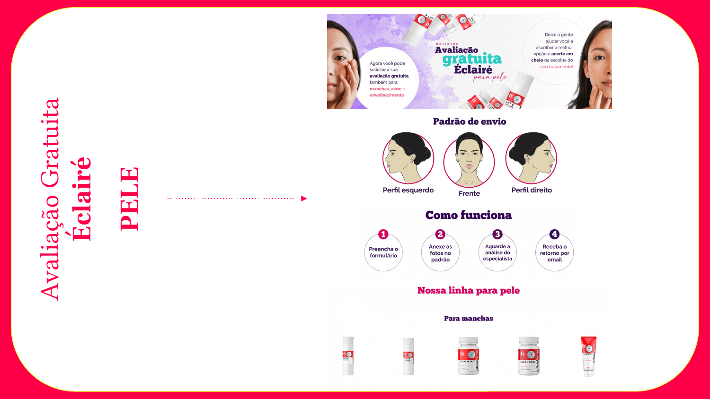
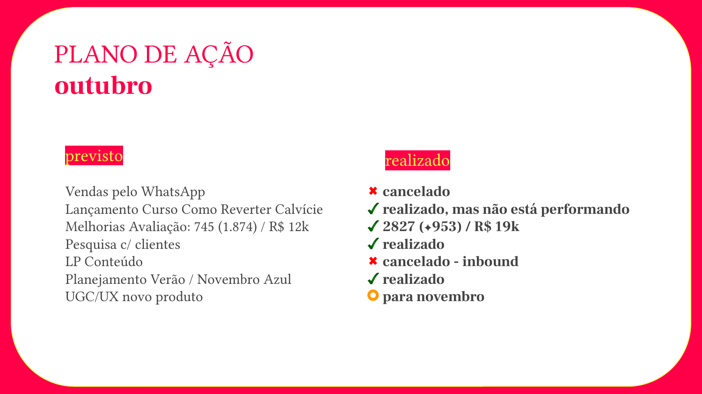
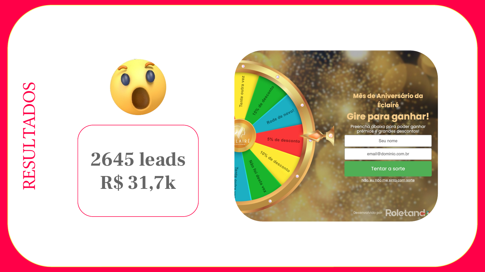
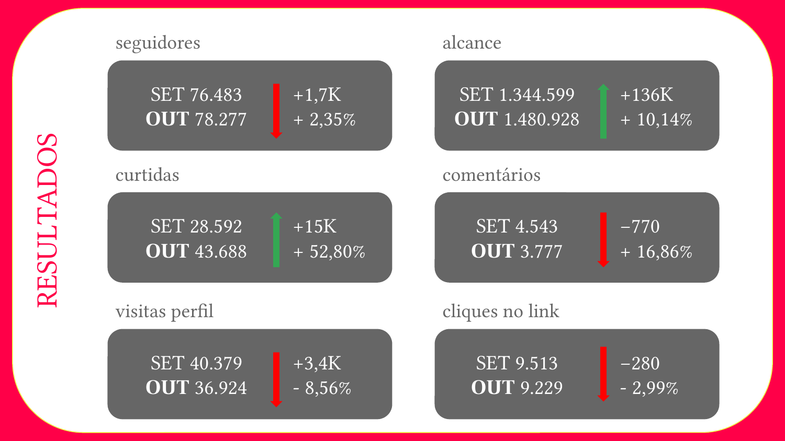
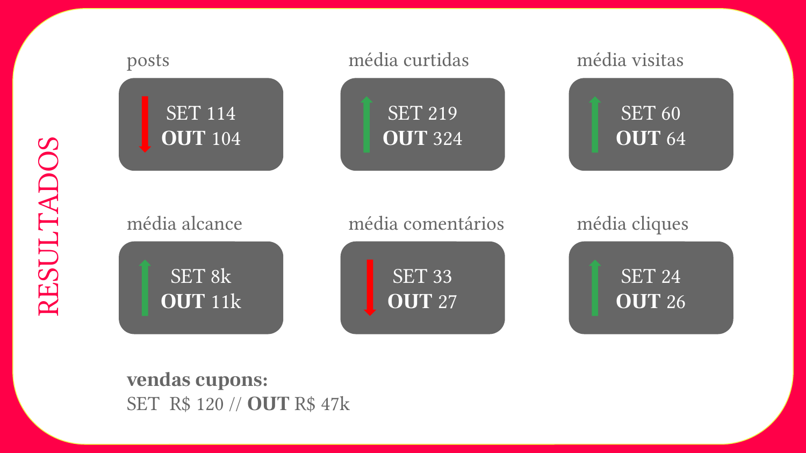
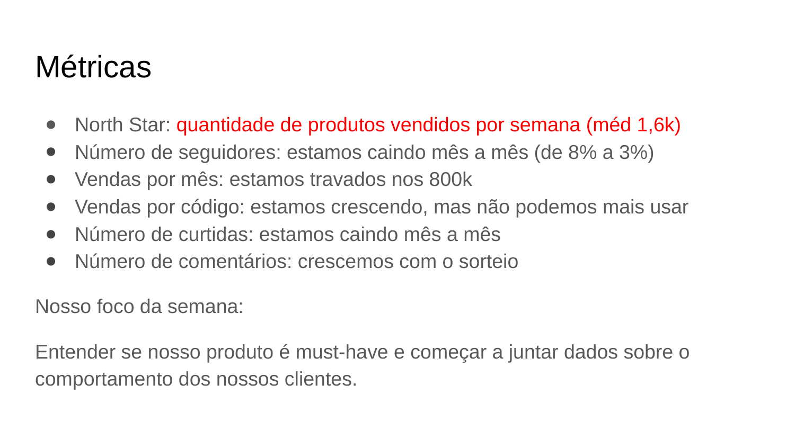
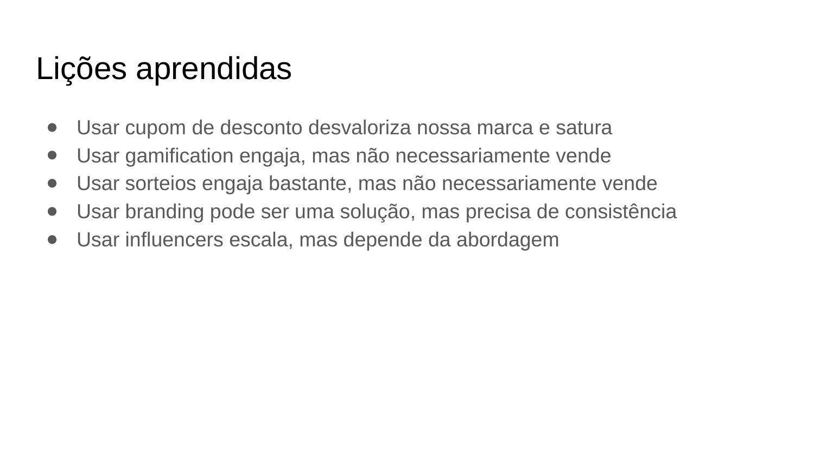

Prepared by Marina Scheffer. Three physician accounts, the creative that ran on them, and the reporting that sat behind the numbers. Every figure on this page comes from the client reporting shown beside it, not from a summary written afterwards.
This is the piece that transfers most directly to a practice. Not a follower count, an intake process.

A free skin assessment offered through social content. The patient fills a form, then submits three photographs to a fixed protocol, left profile, front, right profile, exactly as a practice would specify. A specialist reviews the submission and the recommendation comes back by email. The four steps along the middle read: complete the form, attach the photos to the standard, wait for the specialist's analysis, receive the result by email.
Slides are the original client reporting, in Portuguese. Captions are translations.

The monthly action plan, forecast on the left and delivered on the right. The assessment line was forecast at 1,874 submissions and R$12k. It delivered 2,827 submissions and R$19k, beating the forecast by 51% on volume and 58% on revenue.
Two lines above it are marked cancelled, and one is marked delivered, but not performing. That is the part worth reading. The reporting named what failed in the same slide that claimed what worked, in front of the client, every month.

2,645 leads at R$31.7k from a single campaign, captured on a name and email form with an incentive wheel. Minimal data collected at the point of capture, which is how a practice would want it.
Reported to the client monthly, with the prior month beside it so a bad month could not hide.

September against October. Followers 76,483 to 78,277. Reach 1.34M to 1.48M. Likes 28,592 to 43,688, up 52.8%. Profile visits and link clicks are both marked down, in red, rather than left out.

Averages per post, then the line at the bottom: coupon sales, September R$120, October R$47k. Fewer posts that month, 104 against 114, with higher average reach and more revenue.
The reason the numbers moved. Every campaign ran as a scored experiment with a success criterion set before launch.

A declared north star, units sold per week, with every vanity metric listed underneath and judged against it. The honest entries are the point: followers are falling month on month, monthly sales are stuck, and comments only grew because of a giveaway.

Written conclusions from completed experiments. Discount coupons devalue the brand and saturate. Gamification engages but does not necessarily sell. Giveaways engage heavily but do not necessarily sell. Each one retired a tactic that looked good on an engagement report.
Three reels edited for a 197,000-follower health brand, and the copy written for the same account. English language, practitioner on camera.
She's a single mom of two, supporting the whole family and being told: "Your BMI needs to be 28." No one asked what got her here.
What looked like a motivation problem was actually exhaustion, iron deficiency, low thyroid and high inflammation, and no one had tested any of it, until now. DM me "PROCESS" if you're done guessing and ready for a plan that fits your life.
Everyone says it's a shared journey. But when it's time to carry the weight, it rarely feels equal.
Support is showing up for the hard parts together. If you're ready to step up and be the best you can be in your fertility journey, DM me "READY".
Two are Portuguese-language audiences in Brazil. The methods carry over; the language does not.
A new presence in endometriosis, urogynecology and integrative gynecology. Authority content plus paid media, with a funnel built to attract, educate and convert new patients. Past 10,000 followers in under eighteen months.
The account behind every exhibit above. Strong engagement, inconsistent sales, and nothing linking the two. Rebuilt around a weekly measurement ritual, a declared north star and scored experiments.
Content strategy and production for one of the largest pediatric audiences in its market. 400,000+ engaged followers in under two years, 100M+ reach, now past 712,000.